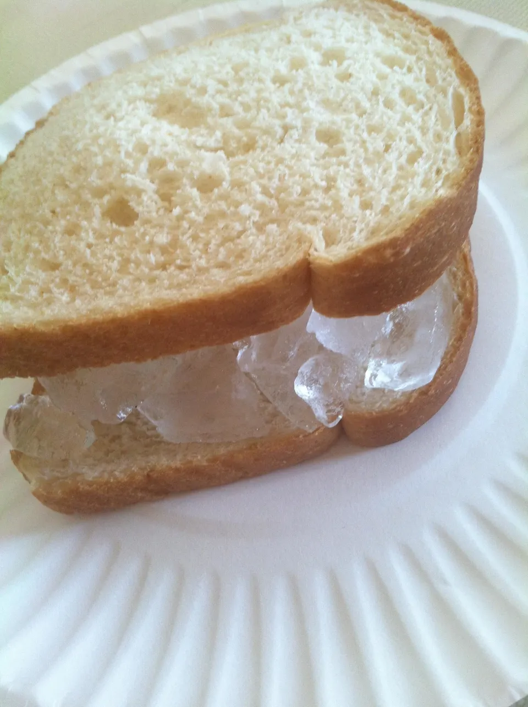

Go Back ←
Ice Cube Sandwich

One of my favorite delicacies. Densely packed with nutrients such as and
Ingredients List :
- 2 cups water (approximately)
- 2 tablespoons water (additional if needed)
- Bread (You can also use Lembas)
Directions:
- Empty the ice cubes that are left in the trays (if there are any left) into the bin.
-
Take the trays over to the sink and fill them with cold water. (Hot water will freeze faster and more clear).
-
Place the water filled ice trays back in the freezer.
-
Replace the ice bin if you had to remove it.
-
Shut the door to the freezer.
-
Be sure to leave for around 4-6 hours at least to make sure it is frozen.
-
Now take two slices of Bread
-
Add ice cubes in the middle of the Bread.
-
And Enjoy the fruits of your labor until you are alive for death is inevitable and unpredictable.
Move to Top ↑